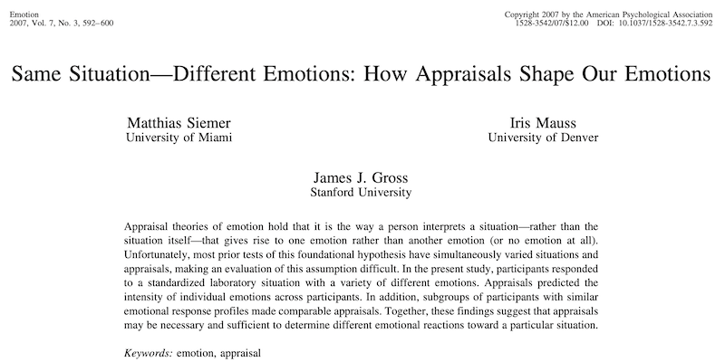
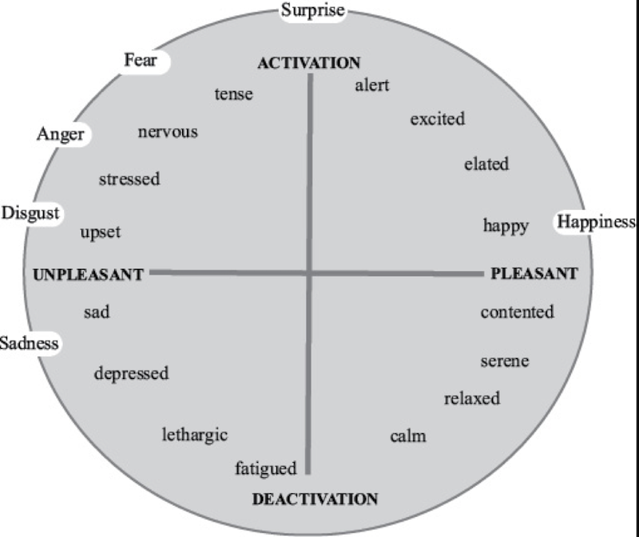

EIM04
Teorie oceny, konstrukcjonizm psychologiczny
Krzysztof Basiński
Teorie oceny (appraisal theories)
Kłopoty z teoriami ewolucyjnymi
- Bardzo niewiele bodźców zawsze powoduje emocje u wszystkich ludzi - bodźce sygnałowe
- To samo wydarzenie może spowodować szeroki wachlarz emocji u różnych ludzi
- Teorie oceny mają wyjaśnić nie uniwersalność a różnorodność ludzkiego doświadczenia emocjonalnego
Teorie oceny
- Emocje zależą od tego, jak jednostka oceni sytuację
- Appraisal is the mental process that allows you to detect objects and events in your environment and evaluate their significance for your immediate well-being (Niedenthal & Ric)
- Jeśli wiesz jak człowiek oceni daną sytuację, możesz poznać jego emocje
Dowody empiryczne
- Scherer & Ceschi (1997) robili wywiady z ludźmi, którzy zgubili bagaż na lotnisku
- Im bardziej ktoś odbierał tą sytuację jako przeszkadzającą w osiągnięciu celów, tym bardziej odczuwał gniew/zaniepokojenie
Siemer, Mauss & Gross, 2007

Siemer, Mauss & Gross, 2007
Badani byli poddawani procedurze indukcji negatywnych emocji (Stemmler, 1997):
- Pomiar elektrofizjologiczny (gsr, bp, emg)
- Mieli odliczać w dół od 18652 co 7 przez 1 minutę
- Trzy próby
Siemer, Mauss & Gross, 2007
- Eksperymentator wściekły, że badany się rusza, robi artefakty, za cicho liczy
- Wszystko nagrane audio, komentarze coraz bardziej krytyczne i wrogie
- Po trzech próbach badany słyszał, że to co zrobił jest bezużyteczne i będzie musiał powrócić do zadania później
Kategorie oceny
- Kontrolowalność
- Istotność dla Ja
- Niespodziewaność
- Odpowiedzialność innych
- Własna odpowiedzialność
Siemer, Mauss & Gross, 2007
- controlability (“I felt in control of what happened during the previous task.”)
- self-importance (“The previous task was important to me.”)
- unexpectedness (“What happened during the previous task was unexpected.”)
- other-responsibility (“What happened during the task was the responsibility of the experimenter.”)
- self-responsibility (“I could have changed the way the previous task went.”)
Siemer, Mauss & Gross, 2007

Wzorce oceny a emocje

Czy ocena jest wrodzona?
- Oceny pierwotne: wrodzone, zdeterminowane biologicznie, szybkie, stare ewolucyjnie
- Oceny wtórne: korzystające z procesów “wyższego rzędu”, wyuczone
- Np. widzimy węża:
- ocena pierwotna - zagrożenie
- ocena wtórna - spoko, to zaskroniec
Kategorie oceny pierwotnej
- Nowość (novelty)
- Walencja
Teorie komponentów oceny
- A może całościowe oceny nie powodują całych emocji?
- Może różne komponenty emocji są powodowane przez różne komponenty oceny?
- Np. strach ma kilka komponentów - ekspresja mimiczna, pobudzenie ANS, tendencja do ucieczki
- Każdy z tych komponentów może mieć źródło w ocenie czego innego
Teorie komponentów oceny
- Tak można tłumaczyć “niuanse i złożoność doświadczeń emocjonalnych” (Scherer, 2009)
- Potwierdzenie empiryczne (?): ekspresje mimiczne nie korelują ściśle z subiektywnie raportowanymi emocjami (Reisenzein, Studtmann, and Horstmann, 2013)
Problemy z teoriami oceny
- Czy ocena powoduje emocje?
- Czy może ocena tylko opisuje jakieś pobudzenie? (Teoria J-L)
- Niejasne związki między emocjami, ich ekspresją a ocenami (co robisz, gdy na pogrzebie przypomni ci się dobry dowcip?)
- Skąd biorą się różnice kulturowe w emocjach?
Psychologiczny konstruktywizm
Konstruktywizm
- Pytanie: dlaczego emocje “wyglądają” inaczej u różnych ludzi, pomiędzy różnymi sytuacjami i w różnych kulturach?
- Czy na prawdę jest coś takiego jak gniew, czy też jest wiele różnych doświadczeń, które nazywamy gniewem?
- Istotne różnice kulturowe w opisie emocji (np. w Anuak, jedenym z języków w Sudanie, smutek opisuje się poprzez ciężką wątrobę. Na Mikronezji dumę określa się “wysokim gardłem”)
Core affect
- Dwa wrodzone komponenty emocji
- Walencja (valence)
- Pobudzenie/aktywacja (arousal/activation)
- Nabywany od dzieciństwa poprzez uczenie asocjacyjne
Core affect
- Sposób w jaki ludzie opisują swoje doświadczenia i ekspresje emocjonalne można sprowadzić do dwóch wymiarów
- Analiza czynnikowa i skalowanie wielowymiarowe

Konstruktywizm
- Pomysł zasadza się na rozwinięciu idei J-L
- Dany “biologicznie” i uniwersalny jest core affect
- Emocje są konstrukcją psychologiczną opisującą core affect w kontekście poprzednich doświadczeń
- Emocje są skutkiem uczenia się przez asocjacje oraz kategoryzacji
Konstruktywizm
- Różnice indywidualne w zmianach core affect skutkują różnicami w doświadczaniu emocji
- Różnice kulturowe w doświadczeniach emocjonalnych wynikają z różnic w procesie kategoryzacji i uwarunkowań językowych